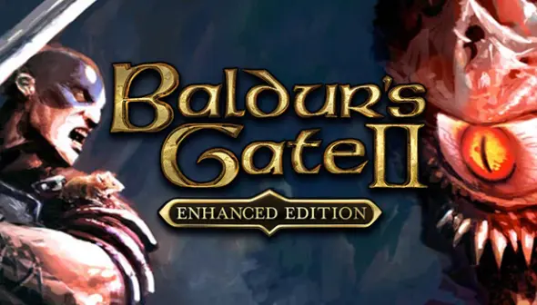
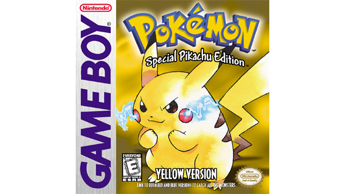

Mejores titulos RPG de los 2000
Baldur's gate 2
"Baldur's Gate II: Shadows of Amn" es un aclamado RPG lanzado en 2000, desarrollado por BioWare. Ambientado en el universo de Dungeons & Dragons, sigue la lucha del protagonista contra el poderoso Irenicus. Con su rica narrativa, desarrollo de personajes y combate táctico, se ha consolidado como uno de los mejores juegos de rol de todos los tiempos.
pokemon amarillo
"Pokémon Amarillo" es un videojuego de rol lanzado en 1998, basado en la popular serie de anime. En esta entrega, los jugadores asumen el papel de un entrenador que comienza su aventura con Pikachu, quien lo sigue fuera de la Pokébola. El juego incluye elementos de "Pokémon Rojo y Azul", pero permite a los jugadores capturar a todos los Pokémon iniciales, como Charmander, Bulbasaur y Squirtle. Con su nostálgica jugabilidad y gráficos, "Pokémon Amarillo" es un clásico querido por los fanáticos de la franquicia.